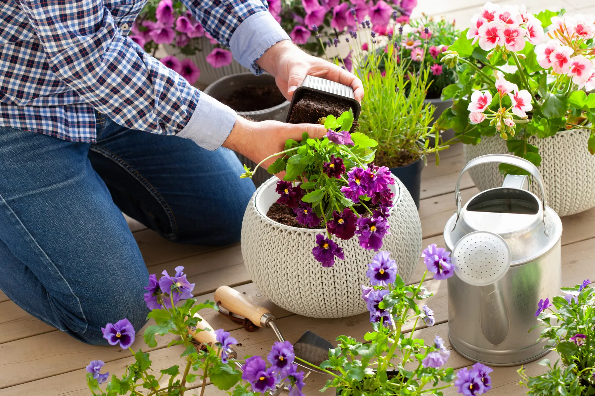

Making the right plant choices for your container garden can turn any area into a vibrant, lush haven.
Knowing these components will guarantee that your container garden thrives, regardless of experience level. Discover useful hints and professional guidance to design a beautiful and sustainable garden.
Assess Your Space
 Evaluate the environmental factors of your gardening space. Consider the amount of wind, humidity, and temperature variations.
Evaluate the environmental factors of your gardening space. Consider the amount of wind, humidity, and temperature variations.
Identify potential obstacles like buildings or trees that may block sunlight. Look for advantages such as natural windbreaks or sheltered spots.
Climate and Season
Choose the best locations for container gardening within your space. Balconies, patios, and windowsills can be ideal. Ensure these areas are easily accessible for watering and maintenance.
Determine where optimal sunlight is available for specific plant types. Track sun movement across your space throughout the day. This helps identify full sun, partial shade, and shade areas.
Adjust plant placement based on seasonal changes in sunlight exposure. Move plants as needed to ensure they receive the right amount of light year-round.
Select Plants Based on Container Size
Plant Size and Growth
In a single container, choose plants with complementary growth habits. To avoid competition, do not combine quickly growing plants with slowly growing ones. Consider the root system size to ensure adequate space within the container.
Light Needs
Match plants with similar light requirements to simplify care routines. Use reflective surfaces to increase light availability for shade-loving plants. Rotate plants periodically to ensure even light exposure.
Seasonal Choices
Incorporate evergreens or hardy plants for year-round interest. Select annuals for quick, seasonal color boosts—plan for succession planting to keep the display vibrant throughout the seasons.
Consider Plant Compatibility
Select plant pairs that benefit each other by deterring pests or enhancing growth. For example, basil can repel pests from tomatoes. Avoid planting incompatible species together to prevent nutrient competition.
Use companion planting to maximize space and increase yield in edible gardens—plant tall vegetables with low-growing herbs to utilize vertical space effectively.
Choose Plants for Visual Appeal
Visual Interest

Incorporate plants of varying heights, colors, and textures for a dynamic display. Tall plants like ornamental grasses create a backdrop.
Medium-height plants such as marigolds add color in the middle. Use trailing plants to soften edges and add depth to arrangements. Ivy or sweet potato vine works well for this purpose.
Experiment with thematic gardens for personalized appeal.
Plants such as lavender or lamb’s ear that have distinctive scents or textures are included in sensory gardens.
Container Selection
Choose containers that complement your home’s exterior and garden theme. For a rustic look, wooden barrels or terracotta pots are ideal. Modern homes may benefit from sleek metal or ceramic containers.
Consider the material of containers for weight, durability, and insulation properties. Plastic containers are lightweight but may not insulate roots well. Clay pots are heavier but provide good insulation.
Select container sizes that accommodate the mature size of plants. Small pots can stunt growth if the plant outgrows its space. Large containers allow roots to spread and thrive.
Arrangement Ideas
Create focal points with large, dramatic plants surrounded by smaller varieties. A tall fern can serve as a centerpiece with petunias around it.
Utilize symmetry or asymmetry to achieve your desired visual balance. Symmetrical arrangements offer a formal look while asymmetrical designs feel more natural.
Incorporate non-plant elements for added interest. Decorative stones or small garden ornaments can enhance the overall appearance of your container garden.
Select Plants Based on Purpose
Edibles and Herbs
 Choose dwarf or bush varieties of vegetables for a better fit in containers.
Choose dwarf or bush varieties of vegetables for a better fit in containers.
Group herbs with similar water and light needs together. Consider companion planting to enhance the growth and flavor of edible plants.
Flowers for Appeal
Mix and match annuals and perennials for continuous blooming. Choose flowers with varying heights and textures for visual interest. Incorporate fragrant flowers to add another sensory dimension to your garden.
Consider Maintenance Needs
Watering Needs
Implement a consistent watering schedule based on plant needs and weather. Container plants often need more frequent watering than garden plants. Use self-watering containers or drip irrigation for efficient water management. These systems help maintain optimal moisture levels.
Monitor soil moisture closely, as container soil dries out faster than ground soil. Insert a finger into the soil to check moisture or use a moisture meter.
Adjust watering frequency accordingly.
Ensuring Drainage
Ensure all containers have adequate drainage holes to prevent root rot. Without proper drainage, excess water can accumulate and damage plant roots. Use a quality potting mix designed for container gardening to improve drainage.
Elevate containers off the ground to encourage water flow and prevent stagnation. Place pots on bricks or pot feet to allow excess water to escape easily.
Account for Seasonal Changes
Seasonal Varieties
Plan for a mix of perennials, annuals, and bulbs to ensure seasonal transitions. Perennials return every year, providing a reliable foundation. Annuals offer vibrant colors but last only one season. Bulbs like tulips and daffodils bloom in spring, adding early color.
Incorporate plants that offer fall colors or winter interest. Chrysanthemums and asters bloom in autumn, while evergreens like holly provide winter greenery. Select plants based on availability and their season-specific care requirements. For instance, pansies thrive in cooler temperatures but wilt in summer heat.
Year-Round Enjoyment
Choose a core of evergreen plants for structure throughout the year. Boxwood and dwarf Alberta spruce are good options. They maintain their foliage even in winter, ensuring your garden always looks full.
Incorporate seasonal highlights to refresh the garden’s appearance. Add flowering annuals in spring and summer for bursts of color. Use ornamental grasses or late-blooming perennials like sedum for fall interest.
Research Plant Varieties
Experiment with thematic gardens for personalized appeal. A color-themed garden might focus on shades of purple and blue. Sensory gardens include plants with unique textures or scents, like lamb’s ear or lavender.
Plant choices that thrive in New Orleans differ from cooler regions, given our heat, humidity, and sudden storms. We help local homeowners pick and place plants and grasses that hold up to Gulf conditions.
We at Big Easy Lawn Care can help you get the right plants for your lawn so call us now.